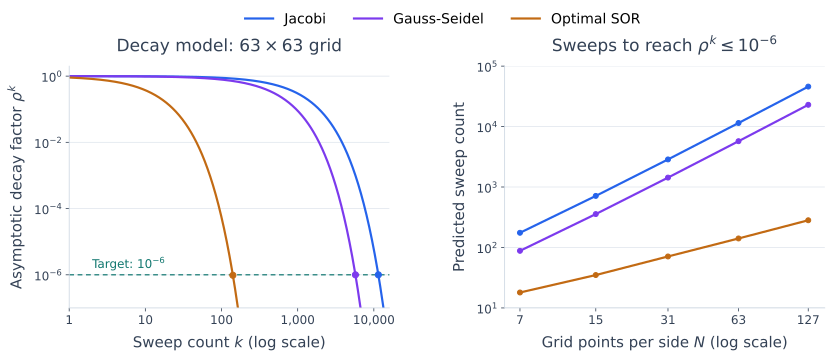

Successive Over-Relaxation (SOR) Method#
Successive over-relaxation (SOR) adjusts the size of each Gauss-Seidel component correction through a real relaxation parameter \(\omega\). A suitable choice can accelerate convergence. The choice \(\omega=1\) recovers Gauss-Seidel.
We consider a real system \(Ax=b\), with \(A\) nonsingular and all diagonal entries nonzero. The parameter is fixed throughout the iteration.
Defining the SOR Iteration#
A sweep updates components \(1,2,\ldots,n\) once, in that order. Starting from \(x^{(k)}\), we construct the new vector \(x^{(k+1)}\) one component at a time.
For component \(i\), first compute a provisional value by solving the \(i\)th equation for that component, using the latest available values of the others:
The first sum uses the new values \(x_j^{(k+1)}\) for components \(j<i\), which have already been updated. The second sum uses the old values \(x_j^{(k)}\) for components \(j>i\), whose turn has not yet come.
The difference \(\widetilde{x}_i-x_i^{(k)}\) is the suggested correction to component \(i\). SOR multiplies this correction by \(\omega\) before adding it to the old value:
Expanding the right-hand side gives \((1-\omega)x_i^{(k)}+\omega\widetilde{x}_i\). Substituting the provisional value into this expression combines the two steps into a single update:
For a \(3\times3\) system, set \(k=0\) and apply this update successively for \(i=1,2,3\). The first sweep is
The second equation uses the newly computed \(x_1^{(1)}\), and the third uses both \(x_1^{(1)}\) and \(x_2^{(1)}\). The next sweep repeats these updates with \(x^{(1)}\) as the starting vector to obtain \(x^{(2)}\).
The relaxation happens after each component update. Later components use those already relaxed values, so SOR is generally different from completing a Gauss-Seidel sweep and then scaling the change in the whole vector. When \(\omega=1\), we recover Gauss-Seidel.
SOR as a Splitting Method#
Use the same sign convention as before:
where \(D\) contains the diagonal entries, while \(-L\) and \(-U\) are the strictly lower and strictly upper triangular parts of \(A\).
To obtain the matrix form, multiply the component update by \(a_{ii}\) and move all terms involving the new iterate to the left:
Because \(L_{ij}=-a_{ij}\) below the diagonal, the left-hand side is component \(i\) of \((D-\omega L)x^{(k+1)}\). Similarly, \(U_{ij}=-a_{ij}\) above the diagonal converts the last sum into component \(i\) of \(\omega Ux^{(k)}\). Collecting all component equations therefore gives
For \(\omega\ne0\), division by \(\omega\) gives the splitting
The splitting therefore has iteration matrix \(G_\omega\), the counterpart of \(G\) for Gauss-Seidel:
The solve with \(D-\omega L\) is lower triangular. No inverse needs to be formed.
The Relaxation Parameter#
Underrelaxation, \(0<\omega<1\): take part of each provisional correction. This damps the updates.
Gauss-Seidel, \(\omega=1\): take the full provisional correction.
Overrelaxation, \(\omega>1\): extend the correction beyond the provisional value, with the aim of making faster progress.
A change in \(\omega\) can improve or worsen convergence. The results below explain when convergence is guaranteed and why \(\omega\ge2\) cannot give convergence for every initial guess.
Python Code Example#
The implementation follows the same in-place sweep and scaled-residual stopping convention as Gauss-Seidel. The required range \(0<\omega<2\) is checked, but this range alone does not guarantee convergence for a general matrix.
import numpy as np
def sor(A, b, omega, x0=None, tol=1e-10, max_iter=1000):
"""Return (x, sweeps), stopping when the scaled residual is <= tol.
A and b are real arrays. Raise RuntimeError if the iteration limit
is reached without satisfying the stopping criterion.
"""
A = np.asarray(A, dtype=float)
b = np.asarray(b, dtype=float)
if b.ndim != 1 or A.shape != (b.size, b.size):
raise ValueError("A must be square and b a matching vector.")
if not np.isfinite(omega) or not 0 < omega < 2:
raise ValueError("omega must lie strictly between 0 and 2.")
if not np.isfinite(tol) or tol <= 0:
raise ValueError("tol must be positive and finite.")
if not isinstance(max_iter, (int, np.integer)) or max_iter < 0:
raise ValueError("max_iter must be a nonnegative integer.")
if np.any(np.diag(A) == 0):
raise ValueError("SOR requires nonzero diagonal entries.")
x = np.zeros_like(b) if x0 is None else np.array(x0, dtype=float, copy=True)
if x.shape != b.shape:
raise ValueError("x0 must have the same shape as b.")
norm_A = np.linalg.norm(A, ord=np.inf)
norm_b = np.linalg.norm(b, ord=np.inf)
for k in range(max_iter + 1):
r = b - A @ x
scale = norm_A * np.linalg.norm(x, ord=np.inf) + norm_b
if np.linalg.norm(r, ord=np.inf) <= tol * scale:
return x, k
if k < max_iter:
for i in range(b.size):
# Earlier entries already contain relaxed new values.
sigma = A[i, :i] @ x[:i] + A[i, i+1:] @ x[i+1:]
provisional = (b[i] - sigma) / A[i, i]
x[i] += omega * (provisional - x[i])
raise RuntimeError("SOR did not converge within max_iter sweeps.")
A return count of zero means that the initial guess already satisfies the tolerance. The code accepts the exact zero solution when both residual and scale vanish. It uses dense NumPy arrays; a sparse implementation need only visit the nonzero entries in each row.
Convergence Conditions#
Theorem 43 (SOR Convergence Conditions)
SOR converges to the solution of \(Ax=b\) for every initial guess if and only if \(\rho(G_\omega)<1\).
Proof. For \(\omega\ne0\), the matrix \(M=D/\omega-L\) is triangular with nonzero diagonal entries. Hence it is nonsingular, and the splitting convergence theorem, Theorem 40, applies with \(M^{-1}N=G_\omega\). For \(\omega=0\), the update leaves every initial guess unchanged and \(G_0=I\), so neither convergence for every initial guess nor \(\rho(G_0)<1\) holds.
Necessary Condition#
Theorem 44 (Necessary Condition for SOR Convergence)
For real \(\omega\), a necessary condition for SOR to converge for every initial guess is \(0<\omega<2\).
Proof. Recall the iteration matrix
Since \(L\) is strictly lower triangular, \(D-\omega L\) is lower triangular with diagonal entries \(a_{11},\ldots,a_{nn}\). Likewise, \((1-\omega)D+\omega U\) is upper triangular with diagonal entries \((1-\omega)a_{11},\ldots,(1-\omega)a_{nn}\).
The determinant of a triangular matrix is the product of its diagonal entries. Therefore,
Taking the determinant of the product defining \(G_\omega\), and using \(\det(B^{-1})=1/\det(B)\), gives
The determinant is the product of the eigenvalues, and each eigenvalue magnitude is at most the spectral radius. Hence
Taking \(n\)th roots gives
Convergence requires \(\rho(G_\omega)<1\), hence \(|1-\omega|<1\), which is equivalent to \(0<\omega<2\).
Sufficient Condition#
For symmetric positive definite matrices, this necessary range is also sufficient.
Theorem 45 (Sufficient Condition for SOR Convergence)
If \(A\) is symmetric positive definite, SOR converges for every initial guess whenever \(0<\omega<2\). In particular, Gauss-Seidel converges when \(A\) is SPD.
Note
This proof is optional. It extends the optional energy-norm proof for Gauss-Seidel. You can use the theorem without following this argument.
Proof. We extend the energy-norm argument used for Gauss-Seidel. Put \(M=D/\omega-L\) and recall that
For an error vector \(e\), let \(s=G_\omega e-e\) be its change during one sweep. Then
Expanding the squared energy norm gives
Here we used \(Ae=-Ms\) and the scalar identity \(s^TMs=s^TM^Ts\). Symmetry gives \(U=L^T\), so
The diagonal entries of an SPD matrix are positive. Since \(0<\omega<2\), we obtain
The inequality is strict because \(s=0\) would imply \(Ae=0\), hence \(e=0\). As in the Gauss-Seidel proof, we need one reduction factor that works for every error direction. The continuous function \(e\mapsto\|G_\omega e\|_A\) attains its maximum on the compact energy unit sphere \(\|e\|_A=1\). This maximum is some \(\gamma<1\), since every value is less than one. Scaling and repeating the bound gives \(\|e^{(k)}\|_A\le\gamma^k\|e^{(0)}\|_A\to0\), proving convergence.
The factor \((2-\omega)/\omega\) explains the permitted range: every nonzero error loses energy within this interval. The rate also depends on the correction \(s\), which changes with \(\omega\), so this factor alone does not identify the fastest choice.
Orderings and Symmetric Sweeps#
The order of the component updates influences convergence and opportunities for parallel computation.
Natural Ordering#
A forward sweep visits components \(1,\ldots,n\). For a grid problem, this often means traversing grid points row by row or column by column. Different orderings can change convergence substantially. For convection-diffusion problems, an ordering that follows the flow can be useful.
Symmetric SOR (SSOR)#
SSOR pairs a forward SOR sweep with a backward sweep through \(n,\ldots,1\). Each component correction in the backward sweep again uses the latest available values.
A forward-backward pair can also provide an inexpensive approximate solve inside another method. Used this way, it is a preconditioner, as described in the chapter introduction. For SPD \(A\) and \(0<\omega<2\), the associated SSOR preconditioner is SPD and can be used with the conjugate gradient (CG) method, introduced in the next chapter. This positive-definiteness statement concerns the preconditioner, not the iteration matrix. The Netlib description of SSOR discusses this use.
Randomized Orderings#
One can choose a new order of the components at each sweep. The iteration matrix then changes between sweeps, so the fixed-matrix convergence theorem above does not directly analyze that method.
Red-Black and Multicolor Orderings#
For some sparse problems, variables can be grouped into colors so that no two variables of the same color are directly coupled. All components within one color can then be updated in parallel, followed by the next color.
On a rectangular grid with coupling only between horizontal and vertical neighbors, a red-black, or chessboard, coloring works: every neighbor has the opposite color. More general sparsity patterns may require additional colors. Coloring increases opportunities for parallelism, but its effect on convergence depends on the problem.
Choosing the Parameter#
For the fastest asymptotic convergence, we seek a parameter that minimizes \(\rho(G_\omega)\). For SPD matrices, every choice in \((0,2)\) converges, but some choices can require many more sweeps than others. A value that helps one matrix or ordering need not help another.
Useful parameter formulas exist for particular structured problems. For general systems, parameter selection often relies on estimates or numerical trials.
Comparing Convergence on a Poisson Grid#
A regular-grid Poisson problem gives a concrete comparison of Jacobi, Gauss-Seidel, and SOR. Consider
on the unit square, with prescribed values of \(u\) on the boundary. Use \(N\) interior grid points in each direction, so there are \(N^2\) unknowns and the grid spacing is \(h=1/(N+1)\). The standard five-point approximation couples each unknown to its four horizontal and vertical neighbors. After multiplying the equations by \(h^2\), the matrix has diagonal entries \(4\) and entries \(-1\) for neighboring unknowns. Boundary values contribute to the right-hand side.
For Gauss-Seidel and SOR, use the red-black ordering described above: update all red points, then all black points. For this model problem, the optimal SOR parameter is known explicitly:
The spectral radii and their behavior for small \(h\) are as follows. These formulas are stated without proof; see Demmel, Section 6.5.4 for their derivation.
Method |
Spectral radius \(\rho\) |
Approximate gap \(1-\rho\) for small \(h\) |
|---|---|---|
Jacobi |
\(\cos(\pi h)\) |
\(\pi^2h^2/2\) |
Gauss-Seidel |
\(\cos^2(\pi h)\) |
\(\pi^2h^2\) |
SOR with \(\omega_{\mathrm{opt}}\) |
\(\omega_{\mathrm{opt}}-1\) |
\(2\pi h\) |
All three spectral radii approach one as the grid is refined, so convergence becomes slower. The gap from one tells us how quickly this happens. To interpret it, use \(\rho^k\) as a model for the eventual error decay. Reducing this factor to \(\epsilon\), with \(0<\epsilon<1\), requires approximately
where the second approximation applies when \(\rho\) is close to one.
For a fixed error reduction, Jacobi and Gauss-Seidel therefore require asymptotically \(O(N^2)\) sweeps, with Gauss-Seidel taking about half as many. Optimally tuned SOR requires \(O(N)\) sweeps on this comparison. Halving the grid spacing roughly quadruples the sweep count for Jacobi and Gauss-Seidel, but only doubles it for optimal SOR.
For example, on a \(63\times63\) interior grid, \(\omega_{\mathrm{opt}}\approx1.906\). The estimate \(\rho^k\le10^{-6}\) gives about \(11{,}500\) Jacobi sweeps, \(5{,}700\) Gauss-Seidel sweeps, and \(140\) optimal SOR sweeps. These numbers compare asymptotic decay factors; they are not measured iteration counts or guaranteed error bounds. Actual counts also depend on the initial error and the behavior before the asymptotic regime.
The figure shows both the difference on a fixed grid and how it grows with grid refinement. Logarithmic axes keep the widely different sweep counts visible.


Fig. 23 Left: the asymptotic model \(\rho^k\) for the three methods; dots mark the first integer sweep count below \(10^{-6}\). Right: the corresponding counts on progressively finer grids. Each successive grid halves \(h\), roughly quadrupling the Jacobi and Gauss-Seidel counts but doubling the optimal SOR count. SOR uses the optimal parameter for each grid. These curves are predictions from the spectral radii, not measured errors or finite-step error bounds.#
Each sparse sweep costs \(O(N^2)\) operations because every grid point has at most four neighbors. Thus reducing the number of sweeps can save substantial work, although Jacobi offers more parallelism. The advantage here also relies on choosing \(\omega\) well: setting \(\omega=1\) gives exactly the Gauss-Seidel rate. The optimal formula above is specific to this grid problem and ordering, not a rule for arbitrary SPD matrices.
SOR uses a fixed relaxation parameter. The next section develops another acceleration strategy: choose changing coefficients using bounds for the eigenvalues.